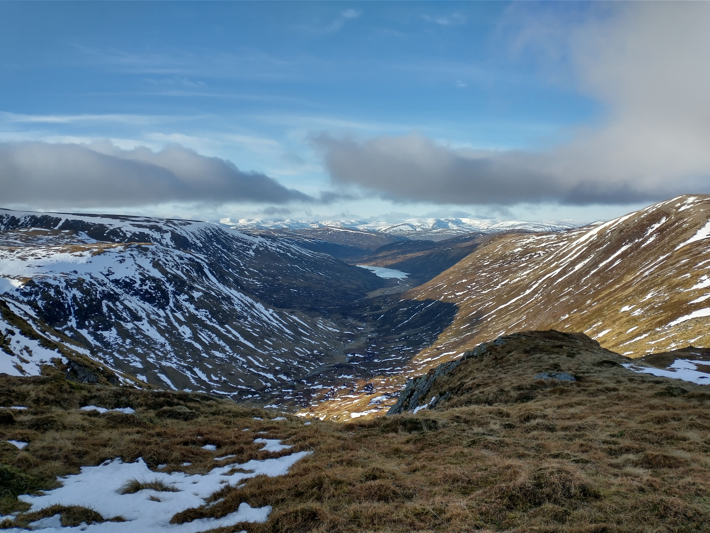
Glen Callater and Loch Callater from near the summit of Tolmount.
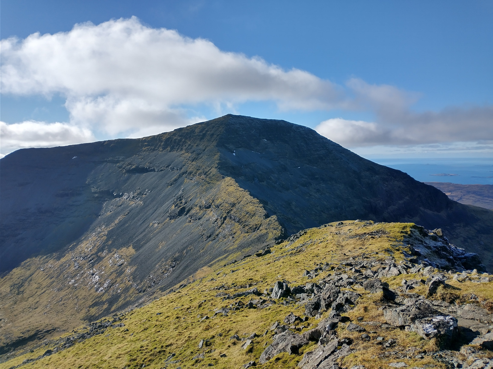
Ben More (Mull) - from A Chioch.
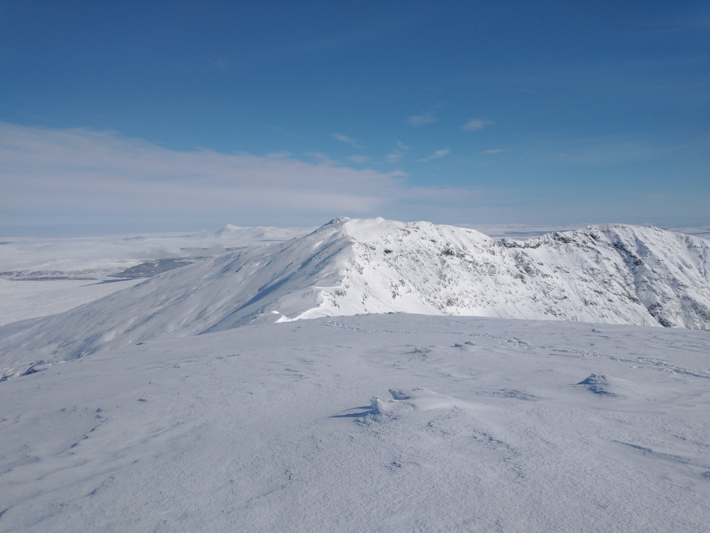
Ben More Assynt from the summit of Conival.
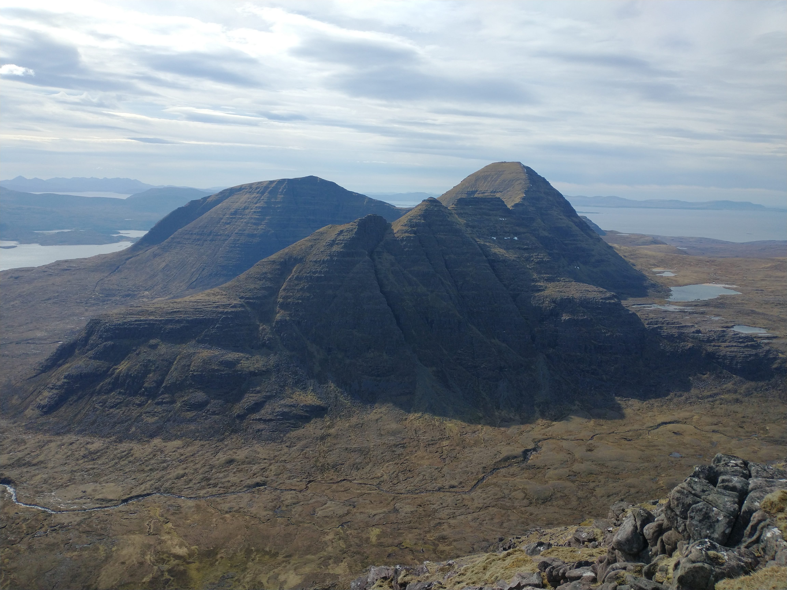
Beinn Alligin from Beinn Dearg.
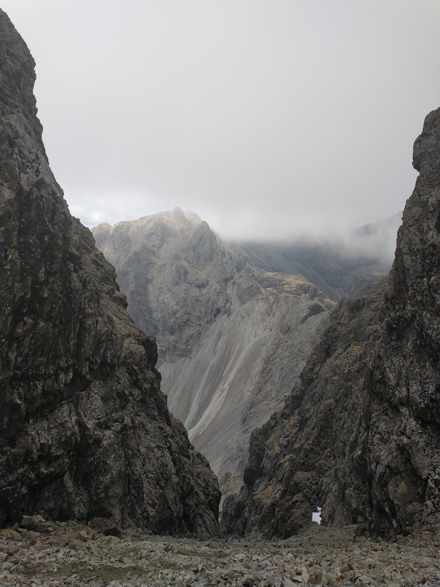
In Pinn from top of the Great Stone chute.
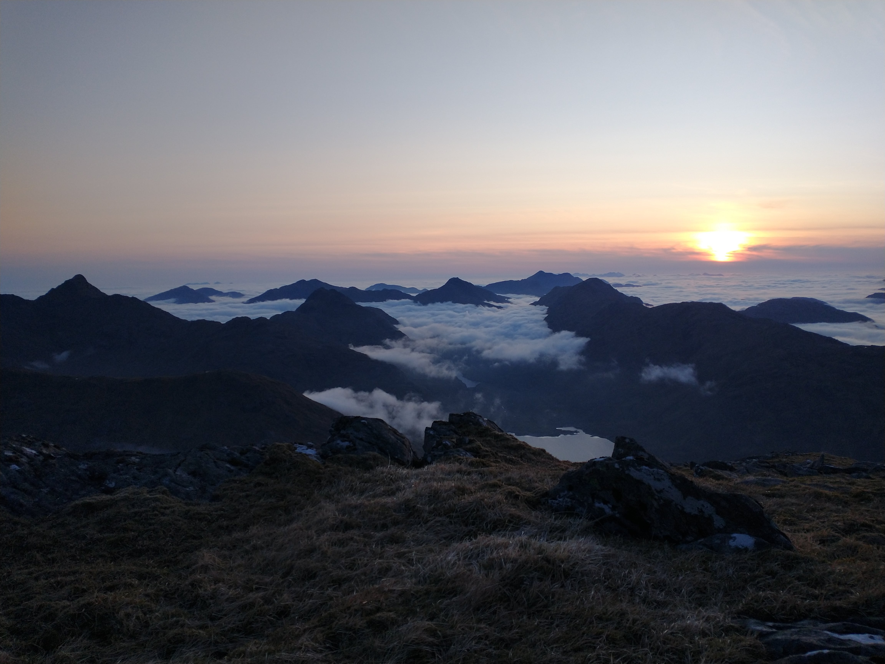
From the summit of Sgurr Mor (Loch Quoich). Sgurr na Ciche, Ben Aden, Luinne Bheinn, Ladhar Bheinn.
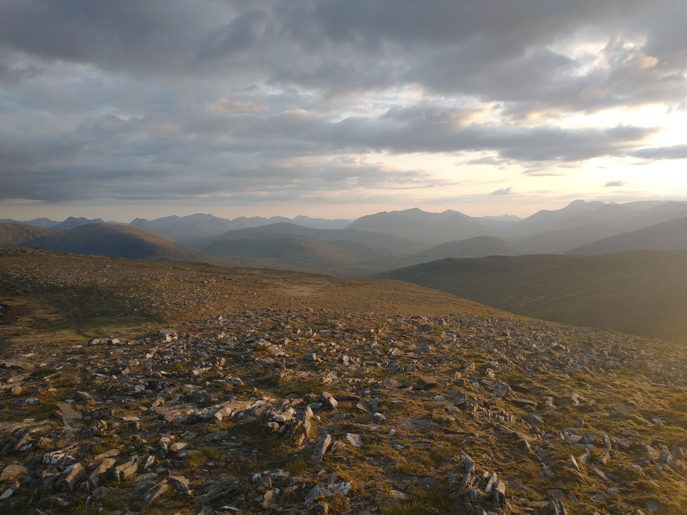
Glen Coe, Mamores, and Ben Nevis from near top of Beinn na Lap.
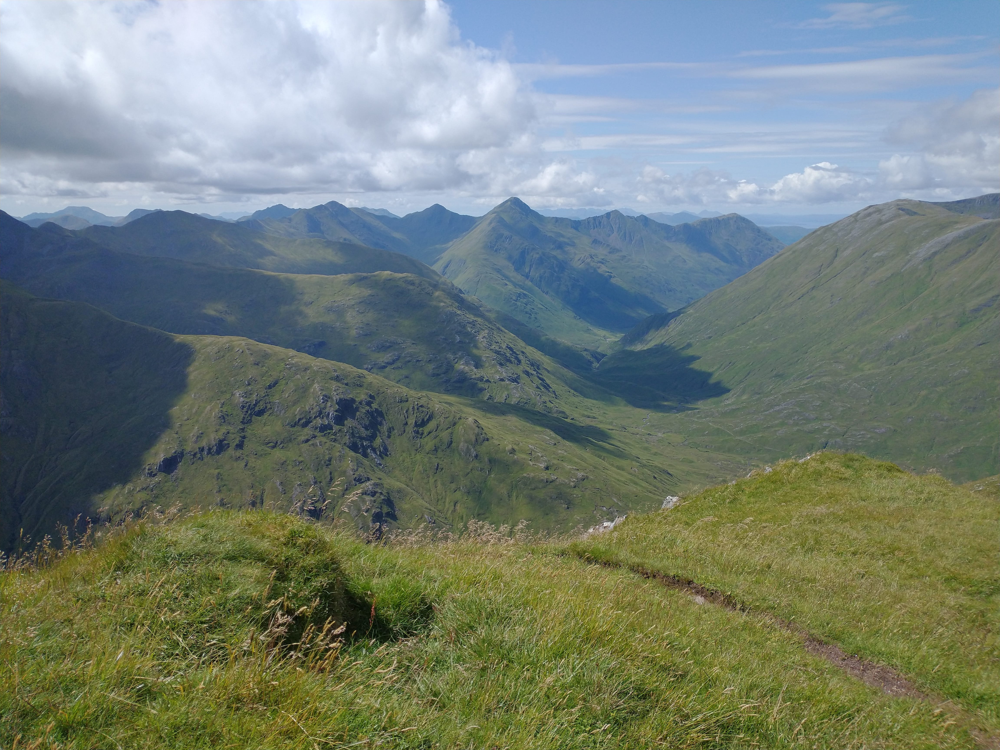
Towards the 5 Sisters from the top of Ciste Dubhe.
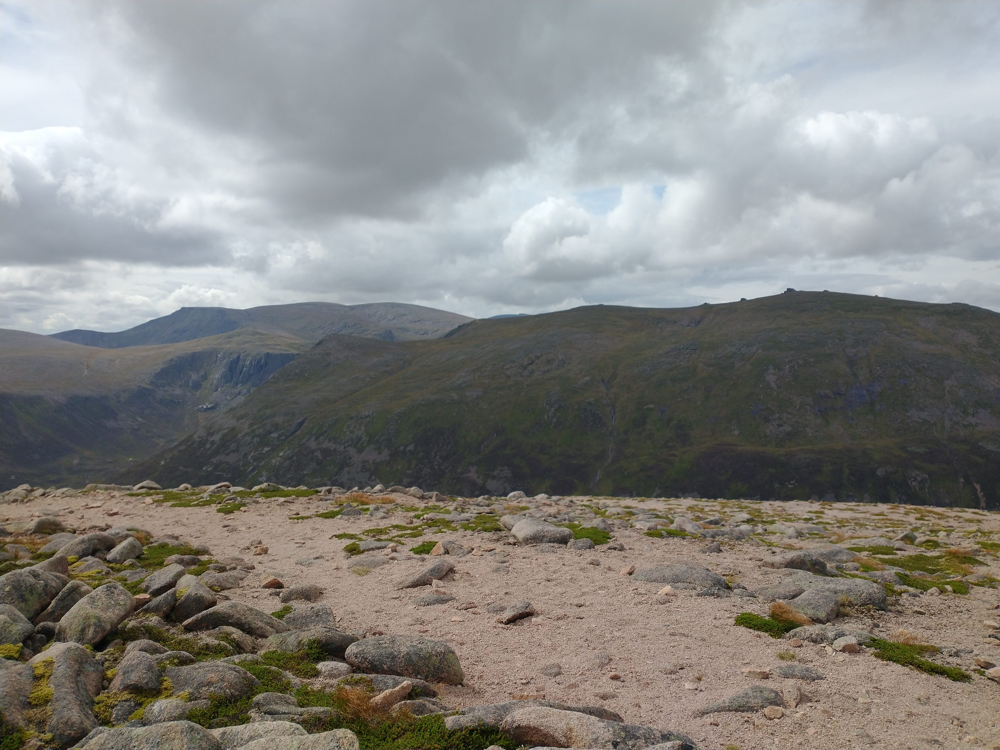
Ben Macdui and Beinn Mheadhoin from Beinn a Chaorainn.
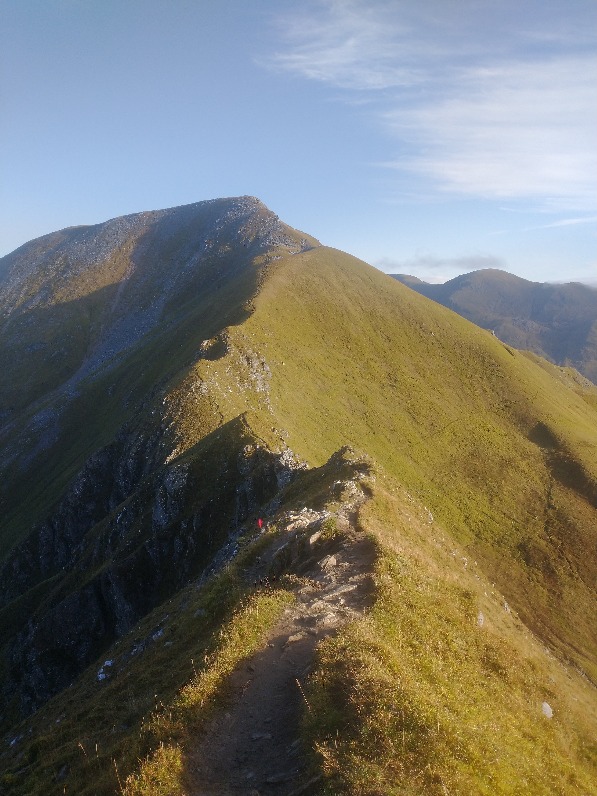
Devil's Ridge towards Sgurr a Mhaim
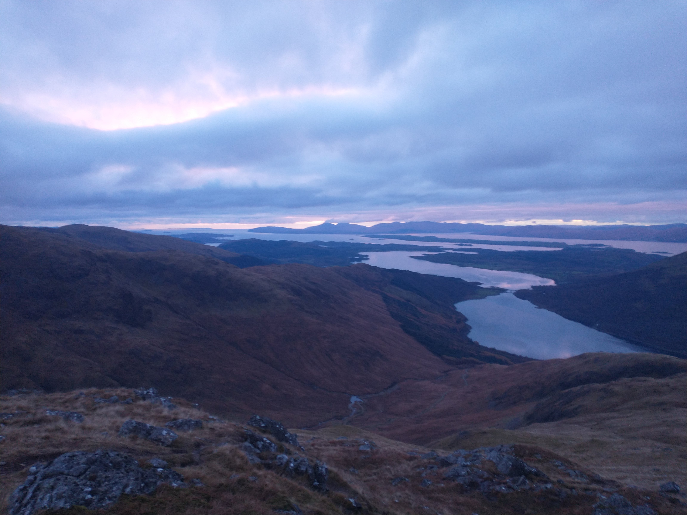
From descent of Beinn Sgulaird (west of Meall Garbh) looking down Loch Creran towards Mull.
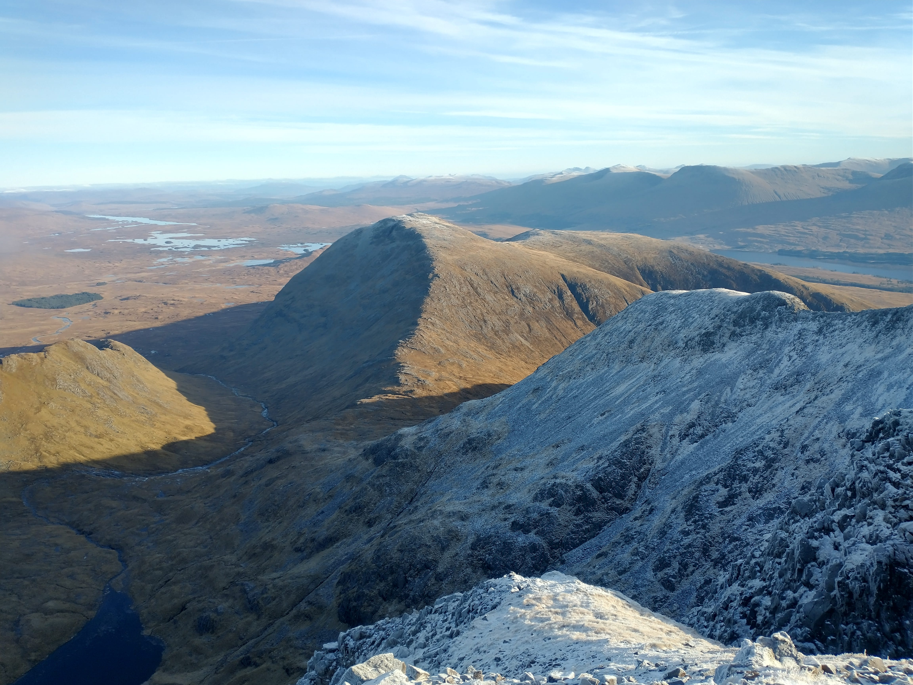
From Stob Ghabhar over Stob a Choire Odhair towards Rannoch Moor.